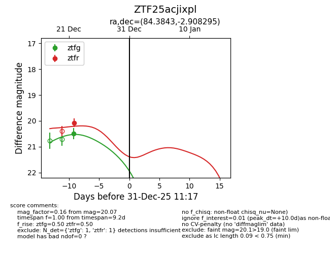
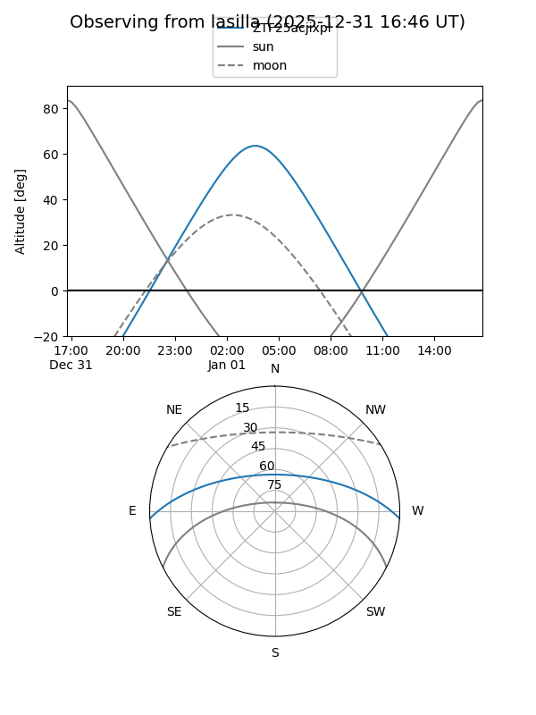
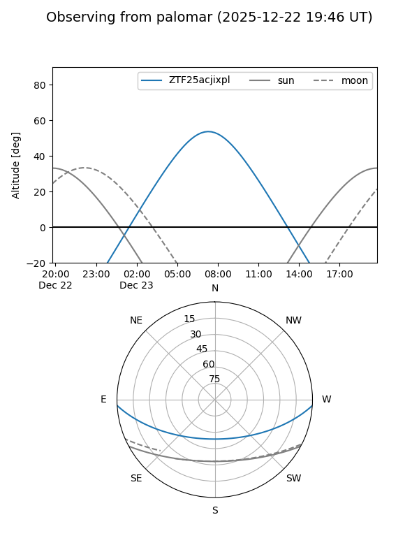

ZTF25acjixpl
Target ZTF25acjixpl at 2025-12-31 17:00
Aliases and brokers:
FINK:
Lasair:
ALeRCE:
alt names
ZTF25acjixpl (ztf,fink_ztf)
Coordinates:
equatorial (ra, dec) = 84.3843,-2.90829
equatorial (HMS+DMS) = 05:37:32.24,-02:54:29.86
galactic (l, b) = (206.9560,-17.74633)
Flags:
Photometry:
last ztfg=20.49, ztfr=20.07
1 ztfg, 1 ztfr detections
Lightcurve

Visibility


Additional plots